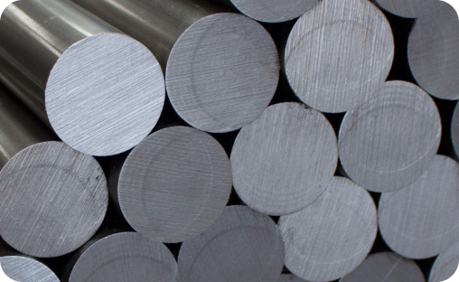

Раскажем о нашем наборе метчиков WDK-HT0312
Он используется для нарезания внутренней резьбы в металлах. Универсальное решение для самых распространенных типов резьбы.
секреты наших метчиков
Он используется для нарезания внутренней резьбы в металлах. Универсальное решение для самых распространенных типов резьбы.
секреты наших метчиков

Метчики изготовлены из качественной инструментальной стали 9ХС. Подходят для работы с цветными металлами и сталью.
В комплекте 21 метчик

Переходите на наш сайт↓
https://wiederkraft.ru/